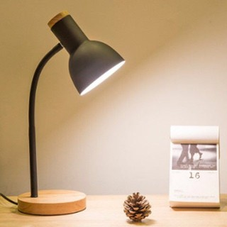

Inspired by Marty Lobdell, Proffessor of psychology at Pierce College, Lakewood, WA, this application will boost your study or work sessions thanks to a simple psychology trick.
Condition your brain to associate the lamp with study/work, so that when you turn it on, your focus automatically increases! Make sure to ONLY use the lamp when studying, and not when grooming yourself or using as ambient lighting for example. Want to see more? click the link below...
Youtube Lecture - "Study Less Study Smart" class=" 